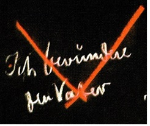
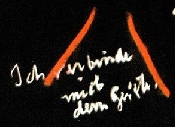

My Dear Sisters and Brothers,
New members have again come to this School today. It isn't possible to repeat every time the introduction which describes the duties and meaning of this Michael School. Therefore, I ask the members who wish to give the verses to the new members, to do so in the manner I will describe at the end of the Lesson, and to give them the introduction, which everyone who wishes to be a member of this School must necessarily know.
And so we will also begin directly today to inscribe in our souls the words which sound forth, to those who are open-minded enough, from all the kingdoms of nature and the hierarchies of the world which surround us as human beings. In the past these words sounded forth to man from all the stones and plants, clouds, stars, from the sun and the moon, from the springs and the rocks. They sound forth to him in the present; they will sound forth to him in the future.
O man, know thyself!
So resounds the Cosmic-Word.
You hear it strong in soul,
You feel it firm in spirit.
Who speaks with such cosmic might?
Who speaks with such depth of heart?
Does it work through distant radiant space
Into your senses' sense of being?
Does it ring through weaving waves of time
Into your life's evolving stream?
It's you yourself who,
In feeling space, in experiencing time,
Create the Word, feeling foreign
In space's soulless void
Because you lose the force of thought
In time's destroying flow.
My dear sisters and brothers, in the description of the path of knowledge we have reached the place where we stand before the Guardian at the abyss of being. The Guardian of the Threshold has made clear to us that what surrounds us in the exterior world can never reveal our own being to us; how our observation of nature, what on and from the earth lives and moves, what shines and speaks from the realm of the stars "to the extent we can perceive it with the senses and with our reason" all that offers nothing to clarify the being of our own self; that the brightness, this glistening in the sunshine, this living and interweaving which is so grand and powerful, so beautiful and magnificent in the outer world, remains dark and gloomy for our true self-knowledge.
Then it was described how we approach the Guardian little by little, who appears to us in the figure of a spiritual cloud, thus showing us an image of ourselves, which in turn shows us what we should strive for as human beings in order to achieve self-knowledge.
Then we reached the Guardian of the Threshold. He showed us what the true shape of our willing, feeling and thinking is before the countenance of the gods. He showed us how being fainthearted and having fear of knowledge lives in us, as hate for knowledge, as doubt about the knowledge that is nevertheless in us, because the character of our times has driven it into us. He showed us the animal form of our willing, feeling and thinking. It must be a shattering experience for us when the Guardian of the Threshold awakens the forces which lead to true self-knowledge in our souls.
Then the Guardian of the Threshold raised us, first showing us, however, how our thinking, as we use it in normal life, is the corpse of the living thinking which was in us before we descended to physical-sensory existence. He showed us how our body, in earthly existence, is a coffin for the deceased living thinking, which lies in the coffin as a corpse. But we use this corpse for our usual abstract thinking between birth and death in order to understand the things of the physical-sensory world.
Once we grasp how dead this thinking is, we can learn from the corpse that lies before us. We look at this corpse. We say to ourselves: This corpse could never have come into being the way it is now. It is what remains of a human being whose soul and spirit were within it. The living person, the ensouled person, the spiritualized person must have existed beforehand in what lies before us as a corpse. Thus we approach the reality of our thinking when we become aware of its deadness, and realize that it is the corpse of the living thinking that was in us before we descended into physical-sensory earthly existence.
Then the Guardian reminds us that our feeling is only half-alive, whereas our willing is fully alive, but we are only conscious of this externally.
The Guardian of the Threshold also reminds us that in order to gradually find the transition to living thinking, we should look up to the heavenly heights; that to grasp the nature of feeling we should look out to the cosmic reaches, and to gain an idea of the nature of will we should look to the world's depths, to the earthly depths.
But at the same time the Guardian shows us how we are placed with our thinking "when we look up to the cosmic thinking in which our earthly-physical thinking is rooted" between light and darkness; how the light can be dangerous if we devote ourselves unilaterally to it, how the darkness can be dangerous if we devote ourselves unilaterally to it, how we must seek our direction and goal in the middle between light and darkness if we are to find the truth, how we stand in the middle between warmth and cold with our feeling, and how we can vanish in the sensual embers of feeling if we surrender ourselves to the warmth, and on the other hand harden in the cold.
The Guardian of the Threshold indicates to us how we should walk in the middle between soul-warmth and soul-cold on the Christ-path. The Guardian of the Threshold indicates to us that when we seek willing in the earthly depths we find ourselves in the middle between life and death; how life would have us vanish in timidity; how death would have us cramped in nothingness; that we must find willing in the Middle Way. That, my dear sisters and brothers, is what the Middle Way is "as it has been described since ancient Mystery times" which the human being must tread if he wants to follow the path to the spirit.
The Guardian of the Threshold, before whom we stand as the earnest first representative of Michael, for the real leader of this School is Michael, gives us further guidance: how we can escape from this apparent thinking, from this dead thinking into the living essence of thinking. For this we must be prepared above all to strictly adhere to the laws which are prescribed for every esotericist in golden letters "he must only seize the gold" which the Guardian of the Threshold now repeats to us.
He makes us attentive to the yawning abyss of being before us, which we must fly over, because with earthly feet we cannot cross; how we will have then entered the spiritual world, for there on the other side of the yawning abyss deep, night-cloaked darkness is still before us. But we must enter beyond the yawning abyss of being into that deep, night-cloaked, cold darkness. Out of it warmth must come to us, out of it must come light which illumines our own Self, which warms our own Self. We cannot find the firm support-point in the spirit if, whenever we are over there, we do not remember the pledge that our soul makes, now that we are in this situation, after having received the previous admonitions from the Guardian of the Threshold, who now says:
Do not forget that as long as you are an earthly human being, even when you have crossed over to the spiritual world, that once you have returned you must adhere to the laws of the earth. When you enter the spiritual world with your thinking, you may not believe that when you return and organize your work and your thoughts in the earthly environment you may fly around dreaming within the earthly environment. You must reserve the flying for your thinking when you are in the spiritual world. You must practice deep, inner, intimate modesty, always wanting to be a man among men when you cross back to the ordinary world of ordinary consciousness. It is precisely by wishing to stay modest in the world, by abstaining from using the laws of the spiritual life in the ordinary world, that you will have the strength to grasp thinking in a way that it can serve you in spiritual worlds.
The Guardian of the Threshold therefore teaches us about thinking thus:
You climb down to the earthly element
With forces of your will unfolding;
As thinker you bestride the earthly realm,
Your animal-likeness will be shown
To you by your own force of thought;
The fear you feel of self you must
Transform into courage of soul.
We must go through this by letting the mantric verse work on us. We must, if we wish to enter into the essential element of the earth, that means in the spiritual element of the earth; we must, my dear sisters and brothers, come to the point where we realize that our thinking is at first animal-like. We must experience fear of our own Self that is still animal-like; then the fear will give birth to its opposite and become the courage we need. That is the Guardian of the Threshold's urgently strong, earnest admonition, which cuts deeply into the heart. He admonishes us that we should feel this way when we tread the earth-element. We have already heard about treading the elements from the Guardian of the Threshold.
He admonishes us further: when, as feeling beings, we enter the fluid element, in the world of the water-beings, that we should not be aware of fear of our own Self, but we should be aware of how we sleep dreaming in this water element, which is our sculptor, as we have seen. And it is just when we become conscious that we live a plant-like existence in our earthly human feeling, that this feeling awakens us, for it shows us how lame our Self is. We will awaken once we have the humility to recognize the lameness of our Self.
Thirdly, when we feel ourselves to be in the air element with our willing "first in the earth-element with thinking, then in the water-element with feeling, then with willing in the air-element" then we will feel in this air-element that we have nothing in willing except what our normal memory gives us: memory-image-forms. We must seize these image-forms, which rest passively in our thoughts, with the will; then we are grasping the air-element in inner images. And our own soul will appear to us as if it were ossified. If we eliminate the earth and the air in thought and imagine ourselves wanting to breathe in the air-element, how ossified will we seem. But just by feeling this death by cold that we pass through, the spiritual fire will come to us, which we need in order to really grasp our willing.
The verses are profound, which the Guardian of the Threshold presents to our souls. Only if we observe them well and have fear of ourselves and know that we are nullified if we only perceive the earth in thought, will we have the courage in our souls for living thinking. When we sense how lame in feeling we are on earth, half living and lame, will the strength grow in us which allows us to awaken, so that we are awake in spiritual life, with the feeling we had before we descended to earthly physical existence. Then, when we have willingly descended into the air-element with our memory, we feel sclerotic and shivering with cold. But it is just when we feel this shivering from the cold the opposite happens, the spiritual fire awakens, showing us that our earthly willing is sleeping, but rooted in the living willing which was in us before we descended to earthly existence. We must learn to remember our existence before we descended to earthly existence.
In respect to feeling, the Guardian of the Threshold admonishes us:
You live with the water-element
Through feeling's weaving dream alone;
To wake pervading water's being
Will show the soul in you
To be a sluggish plant-like being;
But lameness of your Self
Must Lead to self-awakening.
In respect to willing, the Guardian speaks:
You sense in the waves of air
The image-forms of memory only;
Through willing to seize the essence of air,
Your own soul will threaten you
As coldly hardened stone;
But self-hood's death by cold,
It must give way to spirit-fire.
[The mantra is written on the blackboard with the corresponding underlining:]
The Guardian speaks with great earnestness:
You climb down to the earthly element
With forces of your will unfolding
As thinker you bestride the earthly realm,
Your animal-likeness will be shown
To you by your own force of thought
The fear you feel of self you must
Transform into courage of soul.
You live with the water-element
Through feeling's weaving dream alone;
To wake pervading water's being
Will show the soul in you
To be a sluggish plant-like being;
But lameness of your Self
Must Lead to self-awakening.
You sense in the waves of air
The image-forms of memory alone;
Through willing to seize the essence of air,
Your own soul will threaten you
As coldly hardened stone;
But self-hood's death by cold,
It must give way to spirit-fire.
We descend from thinking to feeling in memory when we let this verse work on us. And when we arrive at the depths of memory "where soul-life otherwise vanishes" because the images of memory arise anew there is the boundary, just as a mirror is a boundary. What comes to us from without arrives at something like a memory-wall, then it returns again and again. If one does not look behind the mirror, one does not see behind the memory-wall. But here the Guardian of the Threshold advises us that we must push through what is otherwise a boundary in order to enter the realm of spirit.
After the Guardian of the Threshold has referred us more to our interior with his admonishing verses and has left us time to process the contents of the verses in the soul for when we use these mantric verses in meditation, we must allow ourselves a very long time, especially at this point, so they can work in us with their force and really bring our I downward through thinking, feeling and remembrance to what lies behind all remembrance then the Guardian tells us how we should comport ourselves in respect to the outer world.
He draws our attention again up to the light, which however only lives in us in what seem to be thoughts. It is light that thinks in us. When the light pervades us, it thinks in us. But in earthly life light is only the appearance of a thinking that thinks itself. If we don't go beyond it, untrue spiritual being will lead us to the illusion of self-hood rather than to true self-hood So we must realize that if we only concentrate on thinking, we will wind up with the illusion of self-hood. But it is just this understanding of ourselves as earthly human beings, after having gone through the delusion of self-hood through thinking, which, however, is capable of carrying us over the abyss of being to grasp the world's hardships and problems that will enable us to gradually find support for experiencing existence in thought.
From light's shining force
Your thoughts you retain within;
When shining light in you itself does think,
Will then an untrue spirit-being cause
Illusion of self-hood to arise in you.
Reflecting on the needs of earth
Preserves your human state of being.
Now the Guardian of the Threshold teaches us how in feeling at first we only retain the wonderful, all-embracing forms of the world. But when we only retain these forms in feeling, our spiritual experience remains powerless. Self-hood suffocates if we always only stare, feeling, at what has been formed in the world. But if we begin to love all that is worthy in the world around us, we find being in feeling and we rescue our humanity.
The world's forms you only retain
In feelings held fast within;
When world-form feels itself in you,
The powerless experience of spirit
Will stifle in you the sense of self-hood;
But love of all that's worthy on earth
Will rescue for you your human soul.
Generally we try to hatch thoughts from earthly values. We only retain the illusion of light if we don't consider the earth's weighty problems. We retain what is formed on the earth only in vague feelings if we don't experience this earthly interweaving of forms and gestalt with love.
And what can we retain of the world's life by willing? Our willing exists in the world's life. But if we only retain it by willing, we again fail to reach being. When the life of the world completely engulfs us, destructive spiritual exaltation kills the experience of Self. Immersion in the world's willing causes spiritual exaltation to erupt, which kills us. But if we develop the will in spiritual dedication to the higher worlds, if we think about what we are willing in the physical-sensory world in a way that the gods act in us, who inspire and give impulse to our willing, if we will in the service of the gods, then God lets his being give impulse to us as humans, and we sense real being in godly permeated willing.
You only retain of worldly life
The will within;
If worldly life takes hold in full,
Destructive spirit exaltation
Will kill experience of Self in you;
But spirit-dedicated earthly willing
Allows the God in man to reign.
These are the three admonitions which the Guardian of the Threshold calls out to us in the most earnest moments.
[The mantra is written on the blackboard:]
The Guardian speaks as though the Cosmic-Word itself were resounding:
From light's shining force
Your thoughts you retain within;
"It is as though the Guardian wanted to bring our attention to what we are actually doing. He says that we have not yet gotten over forming mere thoughts about light's shining"
When shining light in you itself does think,
Will then an untrue spirit-being cause
Illusion of self-hood to arise in you.
Reflecting on the needs of earth
Preserves your human state of being.
The world's forms you only retain In feelings held fast within
"Once again the admonition that in our vague, unfocused feelings only what is so wonderfully formed by the world is alive. At first the forming of the world is apprehended in the microcosm through the vagueness of feelings"
When world-form feels itself in you
"that is, not when we sense the world-form with our feelings, but when the world-form penetrates us, the macrocosm into the microcosm"
When world-form feels itself in you,
Experience of spirit is powerless,
"we become aware of our own powerlessness"
When world-form feels itself in you,
Experience of spirit is powerless,
And stifles in you the sense of self-hood;
But love of all that's worthy on earth
Will rescue for you your human soul.
We need this rescuing, for we are about to cross over the abyss. If we only carry over the thoughts instilled by the illusion of light, if we only carry over the vague feelings about world-form, then spiritual exaltation destroys the true light on the other side; powerless feeling, asleep, destroys the experience of the spiritual. We need awareness of the earth's needs, of all that the earth suffers, in order to be worthy to cross over to the spiritual world and not be destroyed by worldly thinking. We need love for what is worthy on the earth in order not to be turned to dust if we cross over with vague feelings. And thirdly, for willing we need this:
You only retain of worldly life
The will within;
If worldly Life takes hold in full,
"and it will do so over there"
Destructive spirit exaltation
Will kill experience of Self in you;
But spirit-dedicated earthly willing
Allows the God in man to reign.
We may not merely carry over to the spiritual world what we have on this side. We must carry over a stronger soul than we have here. We must prepare the soul:
[As the following is spoken, the words between quotation marks are underlined on the blackboard:]
On the other side we find "light's shining force". It lives in our thinking. We need "Reflecting on the needs of earth". Compassion for all the earth's suffering will preserve our "human state of being".
Over there, because we are coming to the World-formation, we don't only need our "feelings", we need "love for all that's worthy on earth"; then our "human soul" will be rescued. Here [in the first verse]: preserve our human state of being; here [in the second verse:] the human soul is rescued.
We must enter the full "worldly life", which in our "willing" is only a weak reflection, is too flimsy to pass over. And we must develop "spiritually developed earthly willing" for the "god in man" to reign.
This is the escalation:
Light's shining force
World-formation
love for all that's worthy on earth
Thoughts
Feelings
Willing
We need:
Reflecting on the needs of earth,
Love for all that's worthy on earth,
Spiritually developed earthly willing;
for we need:
to preserve our human state of being,
to rescue the human soul,
to receive the reigning God within us.
That, my dear sisters and brothers, is what the Guardian places before our souls so that we may develop the wings of soul needed to cross over.
In the next esoteric lesson, to be held on Wednesday, it will be necessary that we receive the mantras through the Guardian of the Threshold "who in this case is Michael's representative at the threshold to the spiritual lands" the mantras which are the first that we speak when we arrive in the spiritual realm, which, however, appears before the human being when receiving these mantras as deep, night-cloaked, cold darkness.
Today, though, after this has been shown to our souls, let us again contemplate what speaks to us from all being, encouraging us toward all that the Guardian of the Threshold has placed before us with such firmness:
O man, know thyself!
So resounds the Cosmic-Word.
You hear it strong in soul,
You feel it firm in spirit.
Who speaks with such cosmic might?
Who speaks with such depth of heart?
Does it work through distant radiant space
Into your senses' sense of being?
Does it ring through weaving waves of time
Into your life's evolving stream?
It's you yourself who,
In feeling space, in experiencing time,
Create the Word, feeling foreign
In space's the soulless void
Because you lose the force of thought
In time's destroying flow.
And what has been placed before our souls by the Guardian of the Threshold's words is Michael's message in this rightfully established Michael School. If we receive them with the right attitude, Michael's being is present in this room, consecrating and strengthening what has been placed before our souls. Therefore it may be accompanied by Michael's Sign. Michael's Sign is:
and Michael's Seal, which he has impressed on the Rosicrucian mood for centuries, and which is expressed in the dictum:
ex deo nascimur
In Christo morimur
Per spiritum sanctum reviviscimus
The first words, "I revere the Father", are spoken accompanied by the gesture:
The second words, "I love the Son" are accompanied by the gesture:
The third words, "I unite myself with the Spirit", are accompanied by the gesture:
 The first gesture means:
I revere the Father
the second gesture:
I love the Son
the third gesture.
I unite myself with the Spirit.
Thus we may understand what is spoken as having been strengthened by Michael's sign and confirmed by Michael's Seal, which is thus, thus and thus, [indicating the Seal gestures on the blackboard] which is impressed over the Rosicrucian words.
So should the verses live, which have been given through Michael's Sign, and sealed by the Michaelic Rosicrucian-School for your souls:
The following is spoken, accompanied by the Seal Gestures:
ex deo nascimur
In Christo morimur
Per spiritum sanctum reviviscimus.
My dear sisters and brothers, the mantric verses which are given in this School may only be possessed by the School's rightful members, that is, those who have the blue membership certificate. Someone who could not be present at a lesson after the date of his admittance at which he could have been present, may receive the verses given after the date of his admittance from another member who has rightfully received them here in the School. For this it is necessary to obtain permission from either Dr. Wegman or myself.
This is not an administrative measure, but it is a basis of an occult school that a real action precedes something like this. Only the person who wants to give the verses to another may make the request to Dr. Wegman or to me, not the one who wants to receive them. Therefore, one can request the verses from another. But permission may not be requested by the one who is to receive the verses, but the one who is to give them. It would be useless for the recipient to ask.
Whoever copies something other than the mantras may keep it for a week; thereafter he is obliged to burn it, for what lives in this School should only live within the School and not outside it. This has nothing to do with power or arbitrary measures. It is all based on occult laws. Because if anything falls into the wrong hands, it loses its effectiveness for those for whom it is intended. If misuse prevails in that mantric verses or the contents of what is given here are given to the wrong people, the mantric verses and what is being given here lose their effectiveness for those who are present. These are facts, not some kind of arbitrary measures.
The program for tomorrow is: again at 9.30 the Pastoral Medicine lesson, at 12 o'clock the speech-formation course, at 5.30 the course for theologians and at 8 o'clock the lecture for members.